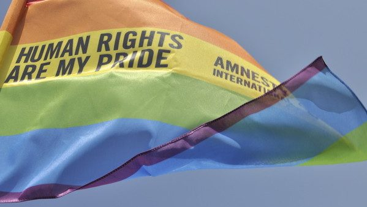
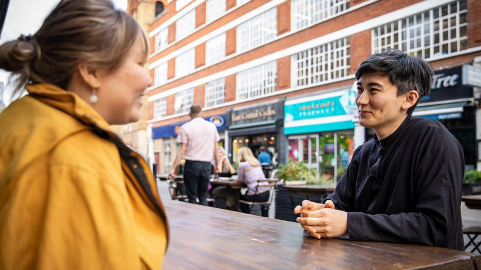
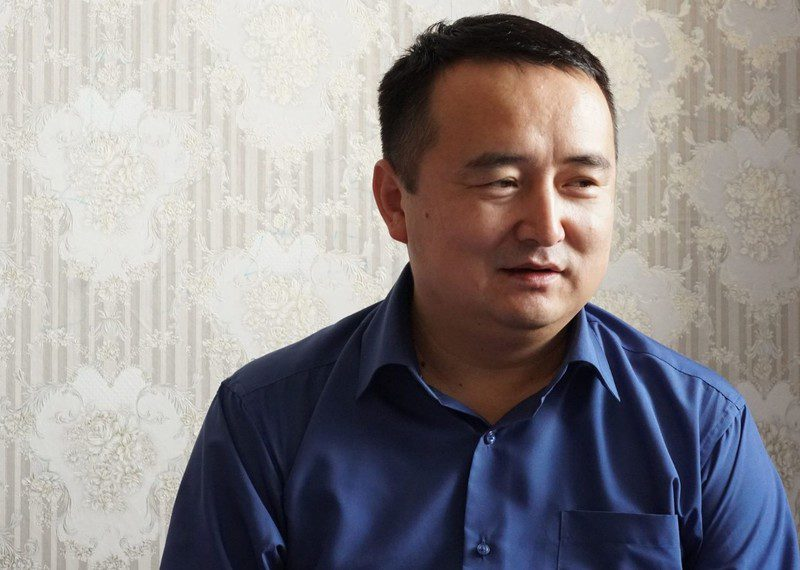

跳转到主要内容
2019年度报告
我们是谁
我们的工作
如何参与
网络联署
加入我们
人权公开课
最新消息
搜索
搜索字段
搜索
立即行动
主菜单
2019年度报告
我们是谁
我们的工作
如何参与
展开 如何参与 子列表
网络联署
加入我们
人权公开课
最新消息
立即行动
Human rights lawyer Nasrin Sotoudeh photographed in the garden of her office. Photo by Kaveh Kazemi/Getty Images)
主题
内容类别
区域/国家
上一个
下一个
35 结果
排序方式
最近
按最早优先
标题 - 提升
标题 - 降序
香港
2019年11月25日
女学生实名指控香港警察性侵，吁不分性别也要坚强站出来

新闻
2019年11月15日
马来西亚：5名被控同性性关系的男子被判鞭刑
伊朗
2019年11月12日
伊朗：帮助女权活动者亚萨曼从狱中获释
新闻
2019年10月24日
缅甸：掸邦北部平民身陷军方暴虐侵犯
新闻
2019年10月16日
摩洛哥: 记者因流产被判入狱一年是对女权的致命打击

新闻
2019年10月8日
哈萨克斯坦酷儿行动者：“我的动力不是善心，而是愤怒”
新闻
2019年9月16日
缅甸：掸邦北部冲突升级，平民被杀事件可成战争罪
新闻
2019年9月11日
维吾尔学者在中国面临处决

新闻
2019年9月2日
因帮助新疆少数民族，哈萨克斯坦行动者被迫消声换自由
新闻
2019年8月29日
中国：反歧视NGO工作人员被以“颠覆罪”拘押
新闻
2019年7月12日
韩国：同志军人面临歧视、暴力、骚扰
新闻
2019年6月17日
你的脸属于谁？刷脸时代你需要知道这些事
上一个
1
2
3
下一个